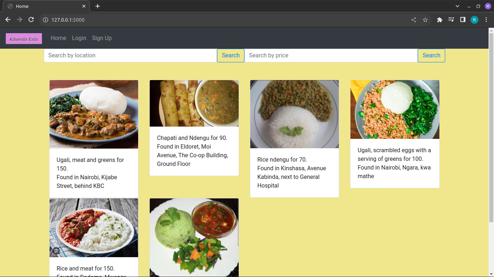
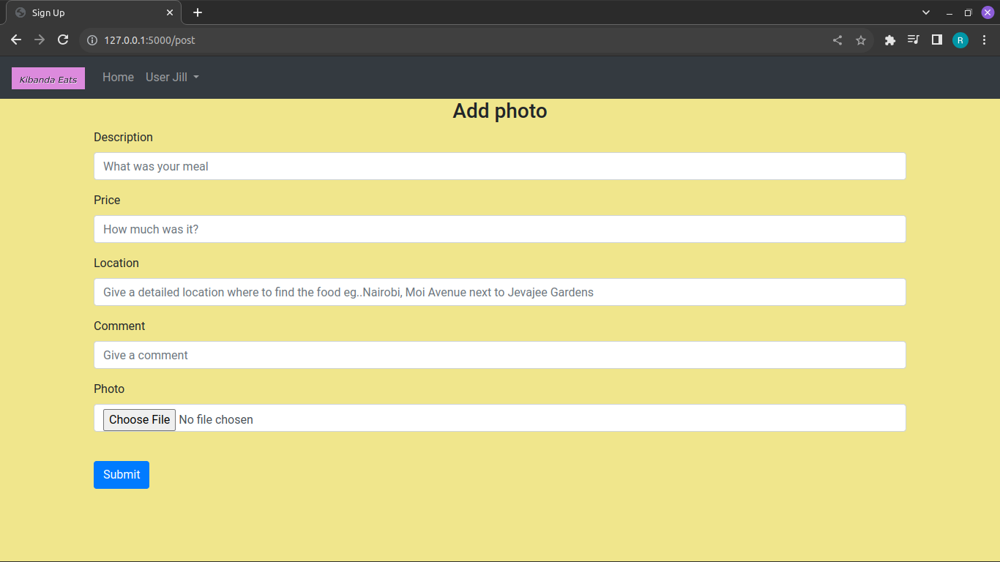

Embark on a tantalizing journey through the culinary world, all with a simple touch. Dive into a treasure trove of delectable posts shared by fellow food enthusiasts, uncovering new gems with every scroll. Our intuitive search feature empowers you to easily zero in on your cravings, ensuring your culinary exploration is a breeze.
Our app's sign-up feature is your gateway become a valued Kibanda Eats contributor. With just a few clicks, you unlock a personalized experience tailored to your preferences and needs. We've made the process seamlsess, ensuring your data is safeguarded every step of the way. Don't miss out on the opportunity to be part of something amazing—sign up today and embark on a journey of discovery, connection, and endless potential.

Our app's "Add Post" feature empowers you to share your culinary discovery with the world. With just a few clicks, you can share details of newly discovered eateries and the foods on offer. Leaving a memorable comment makes all the difference in expressing the foods delight. Join us in shaping the narrative of local eateries and leave your mark on the digital landscape.

Kibanda Eats was inspired by the tough economic times and an ever-increasing need for affordable
sustenance. It all began with a humble desire to connect people through a shared love for food and
a search for wallet-friendly dining options.
As I walked through the bustling streets of my hometown, I couldn't help but notice the resilient spirit of
local eateries. They served mouthwatering dishes crafted with passion and care, often at prices that didn't
break the bank. It was a testament to the unwavering determination of communities to provide for one another
during challenging times.
Then why not create an app that allowed people to share photos of these delectable local dishes,
along with the locations of these hidden gems, and their affordble prices. I wanted to celebrate the
heart and soul of these small businesses and help individuals discover affordable, delicious meals
nearby.
And so, Kibanda Eats was born - a platform that not only lets users tantalize their taste buds
through mouthwatering food photos but also supports local economies by connecting patrons to these
treasured establishments. It's a testament to the resilience of communities and a celebration of the
joy that can be found in a shared meal, even in the toughest of times.
Done by Robert Ndung'u Follow him on Github
Kibanda Eats repository on Github